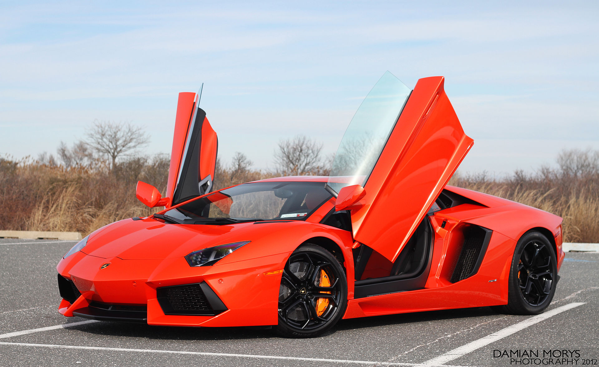
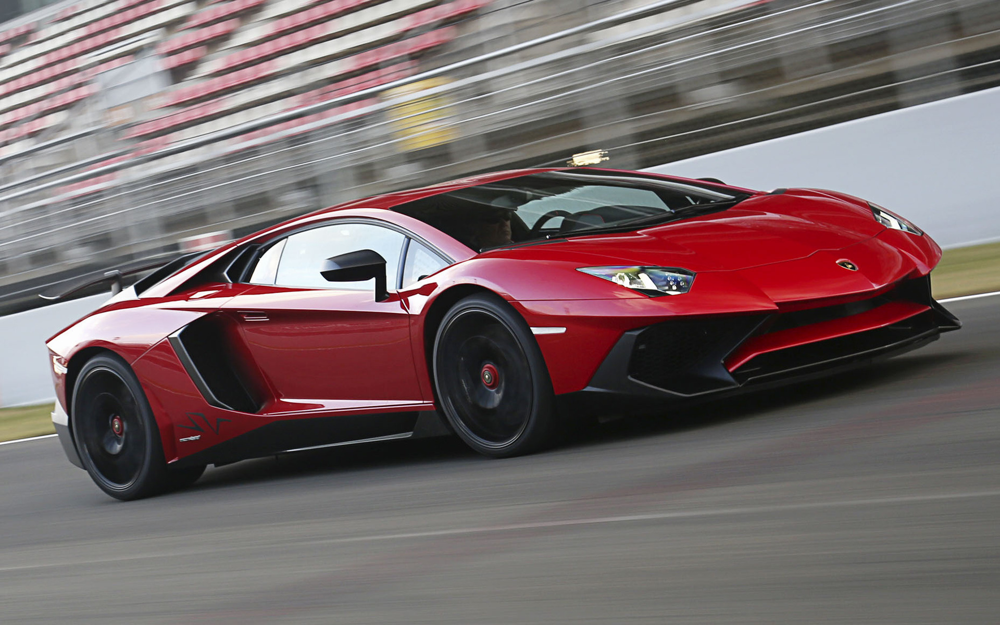
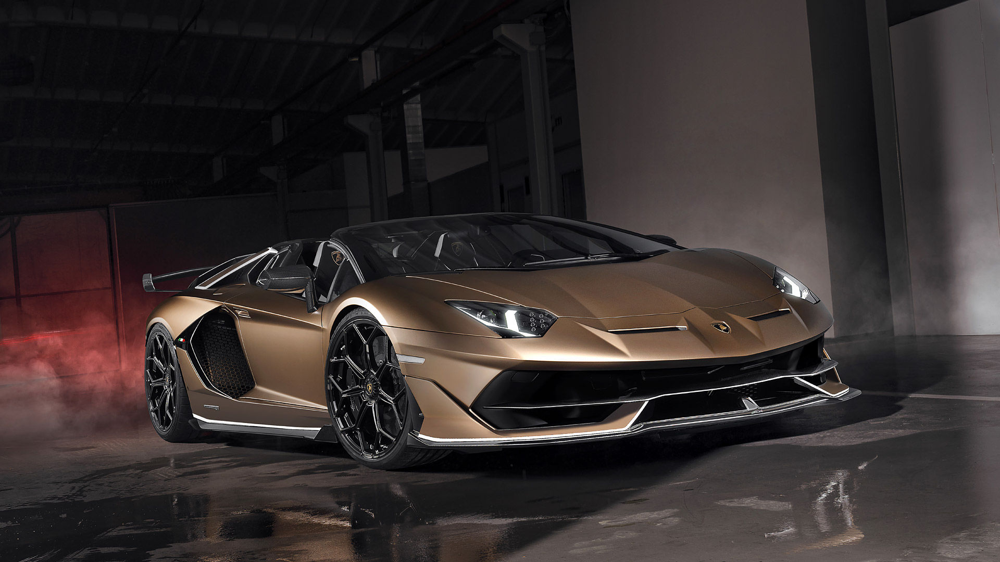
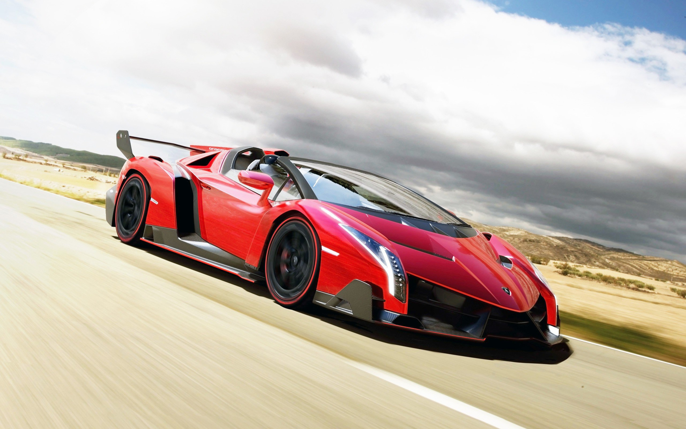

This is Jacob's Website.This a website that explains how the car, The Lamborghini Aventador Works. This car has a 6.5 L V12 that has around 700 horsepower, and has a 0-60 in 2.9 seconds with a modded exhaust which causes an additional 50 horsepower and a top speed of 217 mph.The Aventador LP700-4 Roadster was announced for production on 27 December 2012. Equipped with the same V12 engine as the coupé version, Lamborghini claims that it can accelerate from .The removable roof consists of two carbon fibre panels, weighing 6 kg (13 lb) each, which required the reinforcement of the rear pillar to compensate for the loss of structural integrity as well as to accommodate the rollover protection and ventilation systems for the engine. The panels are easily removable and are stored in the front luggage compartment. The Aventador Roadster has a unique engine cover design and an attachable wind deflector to improve cabin airflow at high speeds as well as a gloss black finish on the A-pillars, windshield header, roof panels, and rear window area. With a total weight of 1,625 kg (3,583 lb) it's only 50 kg (110 lb) heavier than the coupé (the weight of the roof, plus additional stiffening in the sills and A-pillars). The base price of the car is US$441,600.
This is my favortie car because the V12 sounds amazing and it is one of the best looking cars Lamborghini has ever made. And with the liberty walk kit it looks even better. With a Frequency intelligence exhaust it makes it spit at least a 5 foot flame. The gas mileage is the only downfall. Without a exhaust it gets 11 mpg and with an exhaust it gets about 9 mpg.
0–100 km/h (0–62 mph): 2.9 seconds[20] 0–161 km/h (0–100 mph): 6.4 seconds[4] 400 m (1⁄4 mi): 10.5 seconds at 220 km/h (137 mph) Top speed: Official: 350 km/h (217 mph) Measured by Sport Auto magazine: 370 km/h (230 mph) 97–0 km/h (60–0 mph): 30 m (100 ft) Cornering – 1.05 g.
The next Lamborghini that came out was the Aventador S. Which the car was pretty much the same with a little bit of a design change involving the bumper, the decklid, and the exhaust. And the aventador S had 5 more horsepower than the old Aventador. The Aventador S also had the option to raise or lower the wing which the 2012 Aventador did not have.

The next Avetnador that was made was the Aventador SV. Which had a much more agressive back end and was quicker 0-60 then the old Aventador S. It also had motivation from the Hurcan Performante which had the spoiler kinda lifted up. And the wheels were center lock which was from the Reventonn one of the best Lamborghini's.
The next Aventador was made in 2019 and it was called the Aventador SVJ, (Super Viloge Jota), Which was a next level upgrade for The Aventador, Had 50 more horsepower then the Aventador S and The original aventador and had the same top speed as both cars.
The Aventador Svj had a motivation from one of the best Lamborghinis ever made the Lamborghini Veneno Roadster, this car was the Fastest Lamborghini ever made and was one of the best looking ones but personally i prefer the Aventador. The spoiler on the Svj was very simliar to the Veneno and the same bumper.
